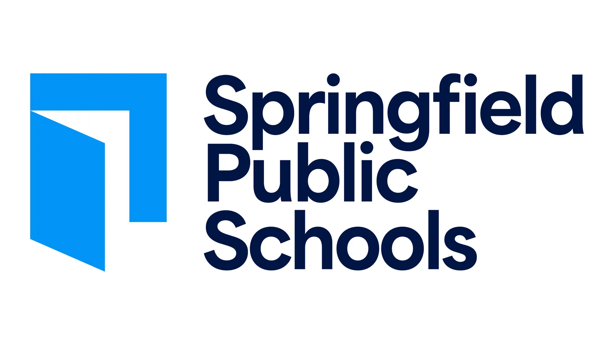

Springfield Public Schools District | Springfield, MA
Custodial Specialist (Janitor), April 2022 – July 2022
- Spearheaded daily maintenance operations across multiple school facilities, ensuring a pristine and safe environment for over 500 students and staff members, enhancing overall school morale and functionality.
- Mastered time management by efficiently handling high-priority cleaning tasks under tight schedules, maintaining 100% compliance with district cleanliness standards.
- Collaborated with a team of 10 to execute large-scale sanitization projects during peak seasons, earning praise for attention to detail and reliability.